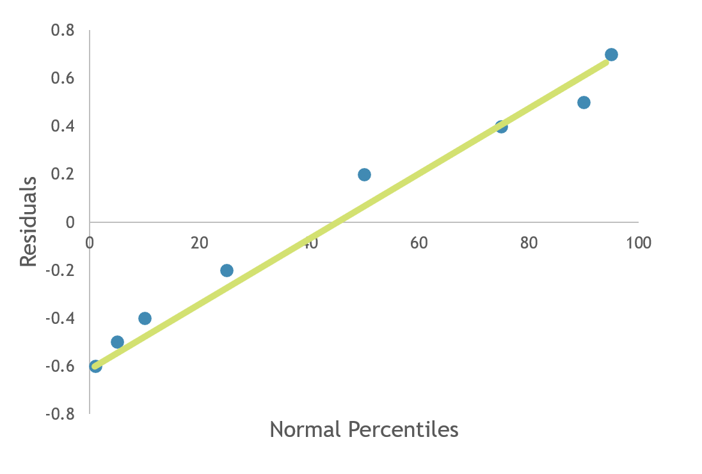
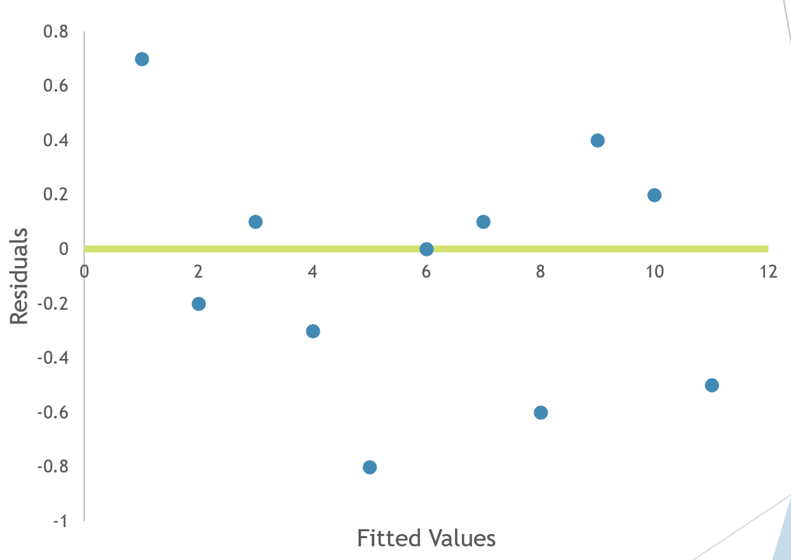

Simple Linear Regression¶
Many applications of statistics are much more complex than: - Estimating a mean or variance - Testing if the population mean or variance is equal to some value - Testing if two means are equal
Often we will use sample data to investigate the relationship between two or more variables. The ultimate goal is to create a model that can be used to predict the value of a single variable.
Regression Analysis¶
The process of finding a mathematical model (or equation) that best fits the data is part of a statistical technique known as Regression Analysis. In regression analysis, the variable to be modeled or predicted is called the dependent variable, or response variable.
Y = the dependent variable
The variables that are used to model Y are called independent variables, or regressors.
\(X_i:\) = independent variable
If we have multiple independent variables (\(X_1, X_2, ... , X_k:\)) the analysis of finding the best model is called multiple regression. We will start with a model where we have only one independent variable, X. With only one X, we have simple linear regression because the model will form a simple straight line equation.
A reasonable form of a relationship between Y and X is the linear relationship:
\(Y = Œ≤_0+Œ≤_1 ùëã\)
\(β_0\) is the intercept \(β_1\) is the slope This is called a deterministic model because if \(β_0\) and \(β_1\) are known for the population, then the value of X determines exactly the value of Y, there is no random or probabilistic component.
In the real world, we will not be able to determine \(β_0\) and \(β_1\) exactly and there will be some components that cannot be measured or explained. Thus, there will be some random component in the equation.
\(Y = Œ≤_0+Œ≤_1 ùëã + ùúÄ\) which is called a probabilistic model.
ùúÄ is called random error.
Error¶
Random Error is assumed to have the following properties:
E(ùúÄ) = 0
Var(ùúÄ) = œÉ2 (homogenous variance assumption)
{kind=link}
Fitted Regression Line¶
We try to estimate the regression equation by obtaining sample values of X and Y. We use this sample information to estimate the values of \(Œ≤_0\) and \(Œ≤_1\) with \(b_0\) and \(b_1\). Since E(ùúÄ) = 0, we do not estimate error because it is expected to be zero over time. Our estimated or fitted regression line is given by:
This is an estimate of the “true” regression line. When a large amount of data is available, we expect the fitted line to be close to the true regression line. We can never draw the true regression line because this would require that we sample the entire population.
Estimating Parameters¶
How do we come up with values for \(b_0\) and \(b_1\) ?
Example
Suppose an appliance store conducts a 5-month experiment to determine the effect of advertising on sales revenue.
\(Y = Œ≤_0+Œ≤_1 ùëã + ùúÄ\)
Y = sales revenue in thousands of dollars
X = advertising expenditures in hundreds of dollars
ε = random error
Sample data is collected for different values of advertising expenditure. Sample data is of the form: {(Xi, Yi); i = 1, … n} We will use the sample data to estimate the true regression line with the fitted line \(\hat{y} = b_0 + b_1 * X\) This equation will allow us to compute predicted values of Y for the observed values of X.
Residual¶
Now, for each value of \(X_i\), we have our sample value \(y_i\) and our predicted value, \(\hat{y}_i\), obtained from the fitted line. The ith residual is defined to be the difference between the observed and predicted values.
Residual: \(e_i = y_i - \hat{y}_i\) for i = 1, 2, …, n
If our fitted model closely matches the sample data, the residuals will be small and we will have a good fit.
Thus, when finding our estimates, \(b_0\) and \(b_1\) , we wish to minimize the residuals. Since residuals can be positive or negative a common measure for looking at total residual value is called “Sum of Squares of the Errors” and is denoted SSE.
SSE is found by summing the squared residuals. Instead of minimizing residuals directly, we will attempt to minimize SSE. This minimization procedure for estimating the parameters is called the Method of Least Squares.
Method Of Least Squares¶
In order to minimize SSE we differentiate SSE with respect to \(b_0\) and \(b_1\) . The result is
and
Example
Suppose an appliance store conducts a 5-month experiment to determine the effect of advertising (X) on sales revenue (Y). Sample data is:
X |
Y |
|---|---|
1 |
1 |
2 |
1 |
3 |
2 |
4 |
2 |
5 |
4 |
Then
X |
Y |
X^2 |
XY |
|---|---|---|---|
1 |
1 |
1 |
1 |
2 |
1 |
4 |
2 |
3 |
2 |
9 |
6 |
4 |
2 |
16 |
8 |
5 |
4 |
25 |
20 |
15 |
10 |
55 |
37 |
\(\bar{x} = 3\)
\(\bar{y} = 2\)
\(n = 5\)
Then
Then the least Squares fitted line is \(\hat{y} = -0.1 + 0.7x\) . We can now calculate the Sum of Squares of the Errors (SSE)
X |
Y |
yHat |
(y-yhat)^2 |
|---|---|---|---|
1 |
1 |
0.6 |
0.16 |
2 |
1 |
1.3 |
0.09 |
3 |
2 |
2.0 |
0 |
4 |
2 |
2.7 |
0.49 |
5 |
4 |
3.4 |
0.36 |
Then SSE = \(\sum{(y_i - \hat{y_i})^2} = 1.1\)
Interpretations¶
\(β_0\) = y-intercept of the line or the point at which the line intercepts the y-axis
\(β_1\) = slope of the line or the amount of increase (or decrease) in the mean of y for every 1-unit increase in x.
In our example
\(b_0\) = -0.1 which is the point where the fitted line crosses the y-axis
\(b_1\) = 0.7 = the mean monthly sales revenue increases $700 for every $100 increase in monthly advertising expenditure. (since y is measured in units of $1,000 and x in units of $100)
What is good about least squares?¶
It Minimizes the sum of squares of vertical deviations from the sample data points to the fitted line. There are other ways to measure closeness, like the sum of the absolute value of the residuals.
but all methods force the residuals to be small.
Properties of least squares¶
Estimates b0 and b1 are based on given sample
If the experiment is repeated over and over, the estimates b0 and b1 will differ from experiment to experiment
The least square estimators are both UNBIASED estimators
\(E(b_0) = β_0\)
\(E(b_1) = β_1\)
More sum of squares equations¶
We have already defined SSE, sum of squares of error. Further sum of squares formulas will become necessary in future calculations:
\(S_{xx}\) = sum of squares of x = \(\sum{x^2_i - n(\bar{x})^2}\)
\(S_{yy}\) = sum of squares of y = \(\sum{y^2_i - n(\bar{y})^2}\)
\(S_{xy}\) = sum of squares of x and y = \(\sum{x_iy_i - n\bar{y}\bar{x}}\)
The following equalitites are also true
\(b_1 = \frac{S_{xy}}{S_{xx}}\)
\(SEE = S_{syy} - b_1S_{xy}\)
Model Assumptions¶
When we perform least squares regression we make the following assumptions about random error, ε
- The mean of ε is 0
i.e. E(ε) = 0
- The variance of ε is constant for all x
Var(ε) = σ2
- The probability distribution of ε is normal
ε ~ Normal
The error terms are independent of one another
Checking model assumptions¶
Graphical methods and statistical tests can be used to check the validity of our assumptions on error. We will use two graphs to check the first three assumptions. (Assumption of independence can also be verified with another graph. We will not be testing this in our class.)
Normal Probability plot¶
In a normal probability plot the residuals are graphed against the expected values of the residuals under the assumption of normality. If the normality assumption is valid, the plot should resemble a straight line, sloping upward to the right. If the assumption is not valid, you will often see the pattern fail in the tails of the graph, or create an obvious curve away from the straight line.
{kind=link}
Assumption of normality is valid

Assumption of normality is invalid
Residuals vs fits¶
A graph that plots the residual values ( \(e_i\) ) versus the fitted values of the regression ( \(\hat{y}\) ) can be used to check if the expected value of error is zero and if the assumption of homogenous variance is valid. If the expected value of error is zero, the plot should have most of its values around zero. If the assumption of equal variances is valid there should be no distinct pattern in the plot; we should see “random scatter”.
{kind=link}
The figure above displays random scatter which has most of the values relatively around zero. We would conclude that the equal variance assumption and the assumption that the expected value of error is zero, are both valid.

Figure 2 appears to have most of the values around zero, so our first assumption is valid. However, the plot has a distinct triangular pattern. Any pattern suggests that the equal variance assumption is not valid.
Estimation of Model Error variance¶
An unbiased estimator of \(\sigma^2\) is:
This is also called the mean square error (MSE)
Estimated Standard deviation¶
The standard deviation, S, measures the spread of the distribution of Y about the fitted least squares line. We can expect 95% of the observed Y values to lie within 2S of their respective least square predicted values